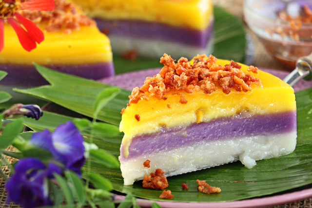

Sapin-sapin
Sapin-sapin is the colorful, multi-layered fiesta of Filipino desserts! It's like a sweet, chewy rainbow made of sticky rice flour and coconut milk, with each vibrant layer bringing its own unique flavor—think ube, jackfruit, and coconut. This deliciously layered treat is not just a feast for the taste buds but also for the eyes, making every bite an experience. Whether you're at a party or just craving something sweet, sapin-sapin is the kind of dessert that'll make you say, “Puwede bang mag-take-home?”

Ingredients:
For the Base:
- 2 cups glutinous rice flour
- 1 cup sugar
- 1 can (400ml) coconut milk
- 1 cup water
- 1/2 cup sugar
- 1/4 tsp salt
For the Layers:
- 1/2 cup ube halaya (purple yam jam)
- 1/2 cup sweetened jackfruit (langka), mashed
- 1/4 cup coconut cream (for topping)
- Food coloring (optional, for more vibrant layers)
Recipe:
- Prepare the Base Mixture:
- In a large bowl, combine the glutinous rice flour, sugar, coconut milk, water, and salt. Mix well until smooth and no lumps remain.
- Divide the Mixture into Three Parts:
- Separate the base mixture into three equal portions.
- Add ube halaya to one portion for the purple layer, jackfruit to another portion for the yellow layer, and leave the third portion plain (white) or color it if you want another vibrant layer.
- Prepare the Steamer:
- Grease a 9-inch round or square pan with oil.
- Fill a steamer with water and bring to a boil.
- Layer the Sapin-Sapin:
- Pour the first layer (white or plain mixture) into the prepared pan.
- Steam for 15-20 minutes, or until it sets.
- Once set, add the second layer (ube mixture) on top and steam for another 15-20 minutes.
- Add the final layer (jackfruit mixture) and steam for 15-20 more minutes until everything is cooked through.
- Finish and Cool:
- Once all layers are set and cooked, remove from the steamer and let it cool to room temperature.
- Top with a drizzle of coconut cream for extra flavor and a glossy finish.
- Serve and Enjoy:
- Slice into squares or wedges and serve. Best enjoyed cold or at room temperature.
Sapin-sapin is perfect for celebrations or as a treat whenever you want a colorful, chewy, and creamy dessert!